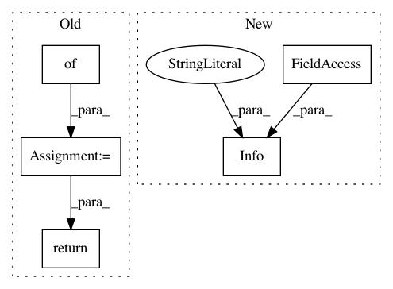

6b4cb961e16a69bce108f49872465329b1e3bcec,methods/mlpy/linear_regression.py,LinearRegression,RunMetrics,#LinearRegression#,111
Before Change
AvgMCC = Metrics.MCCMultiClass(confusionMatrix)
AvgInformation = Metrics.AvgMPIArray(confusionMatrix, truelabels, predictedlabels)
SimpleMSE = Metrics.SimpleMeanSquaredError(truelabels, predictedlabels)
metrics_dict = {}
metrics_dict["Avg Accuracy"] = AvgAcc
metrics_dict["MultiClass Precision"] = AvgPrec
metrics_dict["MultiClass Recall"] = AvgRec
metrics_dict["MultiClass FMeasure"] = AvgF
metrics_dict["MultiClass Lift"] = AvgLift
metrics_dict["MultiClass MCC"] = AvgMCC
metrics_dict["MultiClass Information"] = AvgInformation
metrics_dict["Simple MSE"] = SimpleMSE
return metrics_dict
else:
Log.Fatal("This method requires three datasets.")
"""
After Change
successful.
"""
def RunMetrics(self, options):
Log.Info("Perform Linear regression.", self.verbose)
results = self.LinearRegressionMlpy(options)
if results < 0:
return results
In pattern: SUPERPATTERN
Frequency: 5
Non-data size: 5
Instances
Project Name: mlpack/benchmarks
Commit Name: 6b4cb961e16a69bce108f49872465329b1e3bcec
Time: 2016-07-11
Author: marcus.edel@fu-berlin.de
File Name: methods/mlpy/linear_regression.py
Class Name: LinearRegression
Method Name: RunMetrics
Project Name: mlpack/benchmarks
Commit Name: 0412c274d494a63090d8acd15f1cf97f7791cbcc
Time: 2016-07-11
Author: marcus.edel@fu-berlin.de
File Name: methods/shogun/linear_regression.py
Class Name: LinearRegression
Method Name: RunMetrics
Project Name: mlpack/benchmarks
Commit Name: 0412c274d494a63090d8acd15f1cf97f7791cbcc
Time: 2016-07-11
Author: marcus.edel@fu-berlin.de
File Name: methods/shogun/logistic_regression.py
Class Name: LogisticRegression
Method Name: RunMetrics
Project Name: mlpack/benchmarks
Commit Name: 0412c274d494a63090d8acd15f1cf97f7791cbcc
Time: 2016-07-11
Author: marcus.edel@fu-berlin.de
File Name: methods/shogun/nbc.py
Class Name: NBC
Method Name: RunMetrics
Project Name: mlpack/benchmarks
Commit Name: 0412c274d494a63090d8acd15f1cf97f7791cbcc
Time: 2016-07-11
Author: marcus.edel@fu-berlin.de
File Name: methods/shogun/lasso.py
Class Name: LASSO
Method Name: RunMetrics